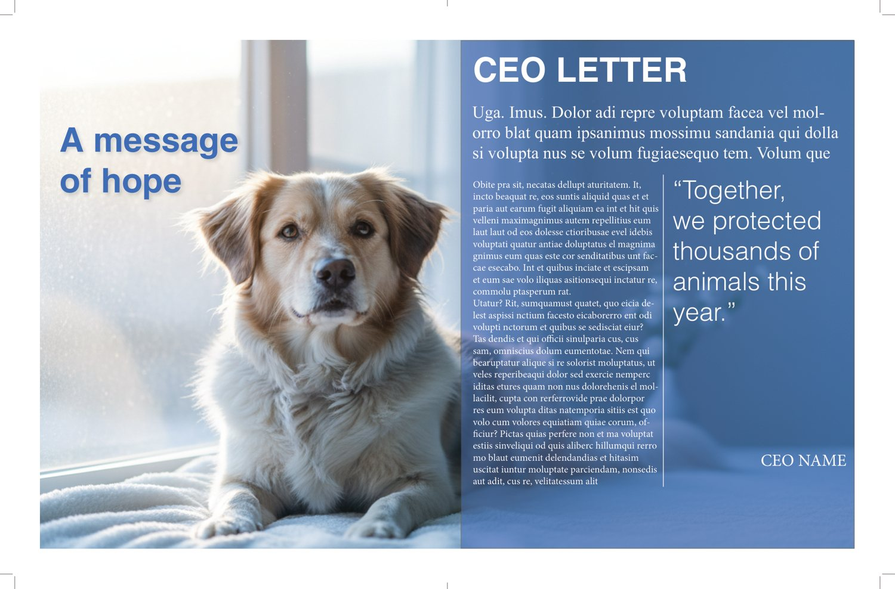
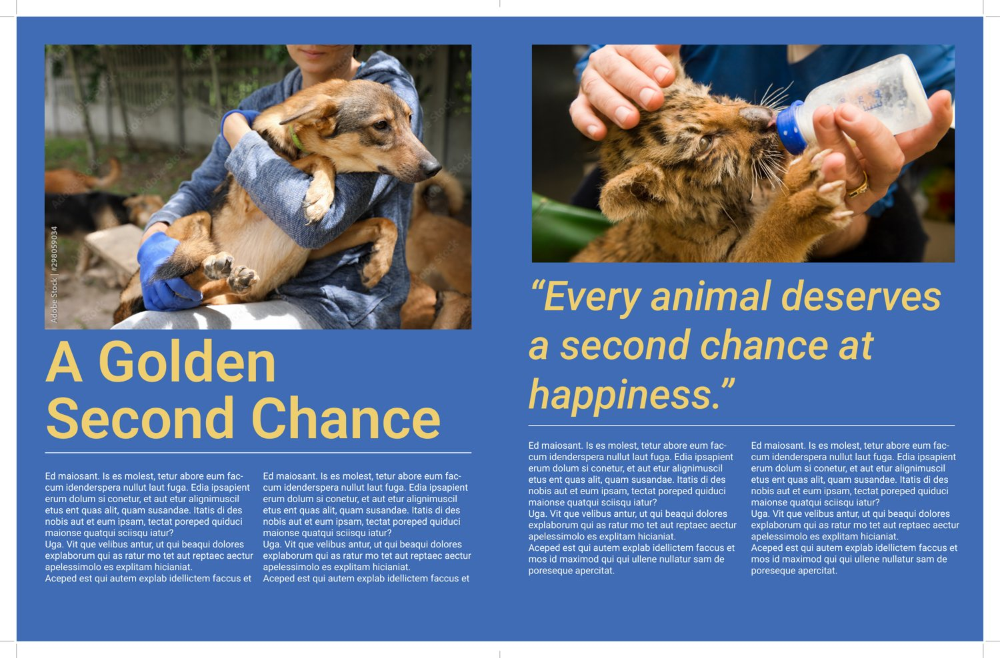
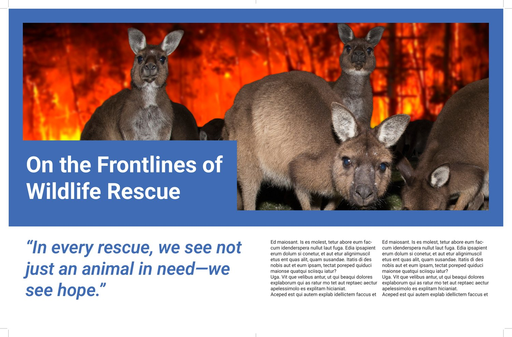
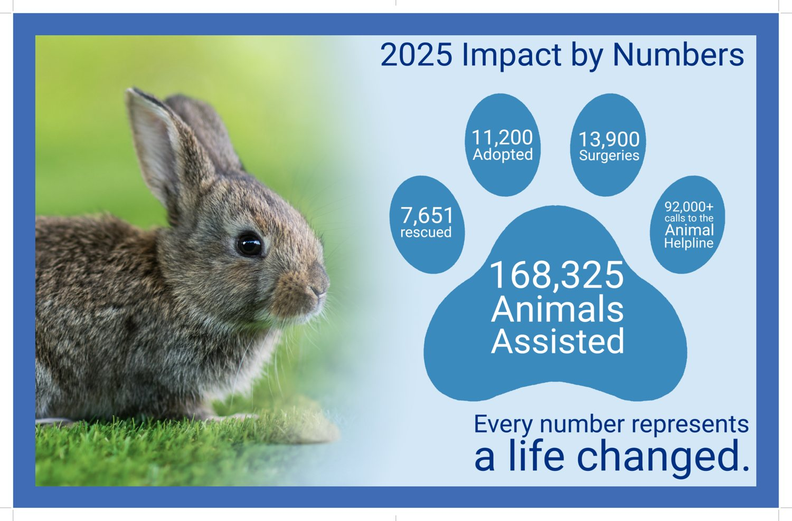

Selected Pages




Report · Data Visualization
An annual report concept for the BC SPCA — turning a year of rescue work into a clear, warm, and hopeful story told through data, photography, and type. A project close to my heart as someone who cares about animal welfare.
Layout, infographics & editorial design
Adobe InDesign, Illustrator, Photoshop
BCIT Graphic Design

An annual report has to do two things at once: report the numbers, and make people feel the mission behind them. For the BC SPCA, that mission is animal welfare — so the design needed to feel trustworthy and data-driven, but also warm and human.
I built the report around a calm blue palette, generous photography, and a recurring idea — "every number represents a life changed" — carried from the cover word-mark through the impact infographics to the closing wildlife-rescue feature.
Selected Pages


